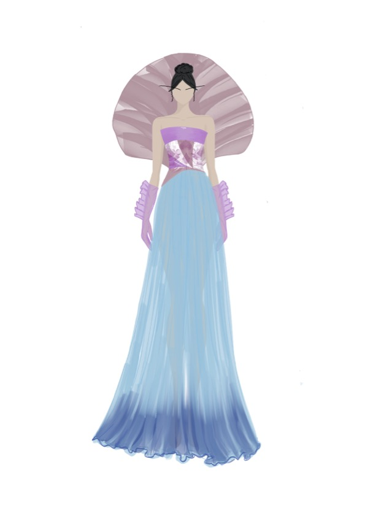
As a part of my Lánhuā collection I was heavily inspired by orchids, water and Tang dynasty hanfus.The structured back piece resembles a delicate orchid petal.
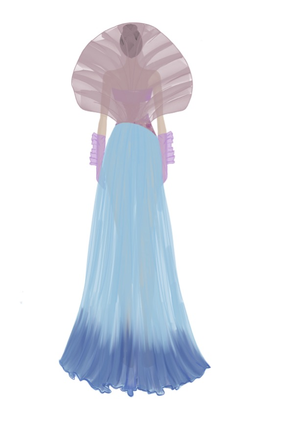
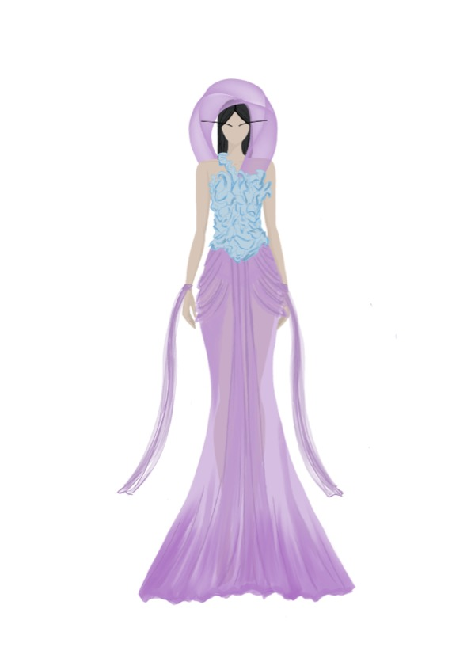
Another piece of my Lánhuā collection which was mostly inspired by water. The flow of water and the structure waves make.
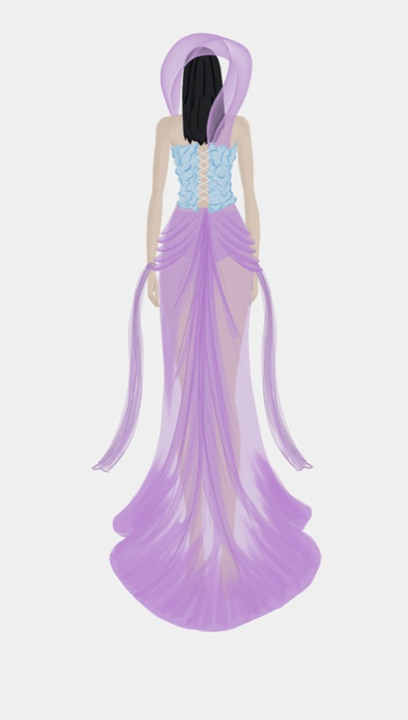
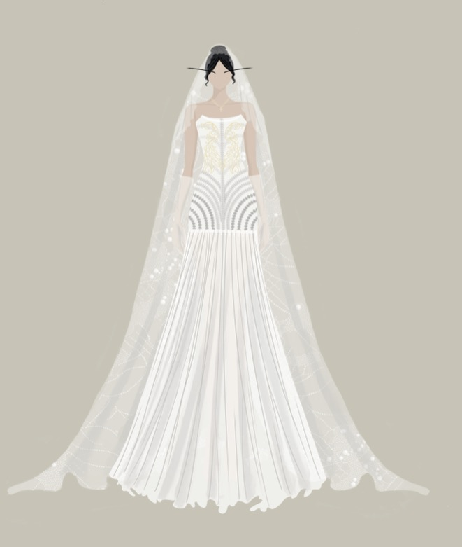
A bridal piece from my Èclat de Perle collection was inspired by pearls as well as peacocks. Embroidered on it is an elegant peacock with embellishing all along the corset.
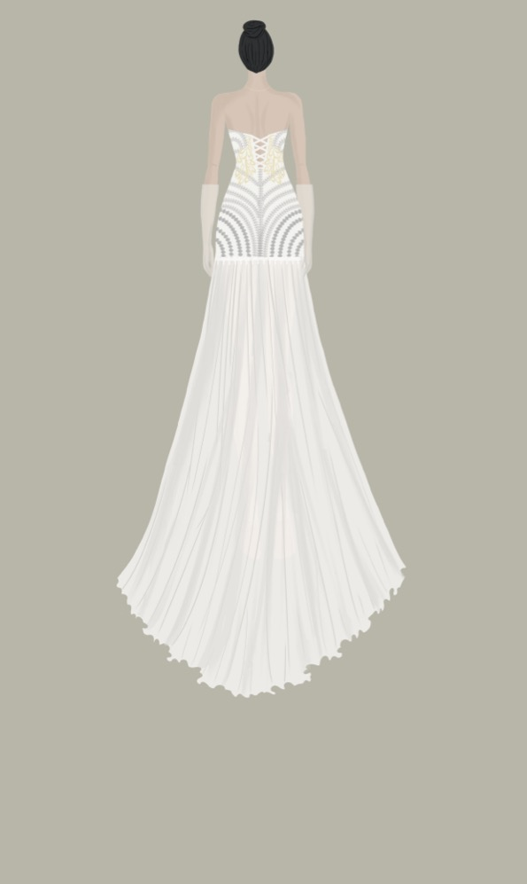
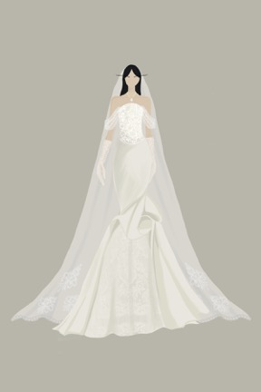
As a second piece from my Èclat de Perle collection this was heavily inspired by pearls. The corset is the shape of dozens of pearls embroidered.
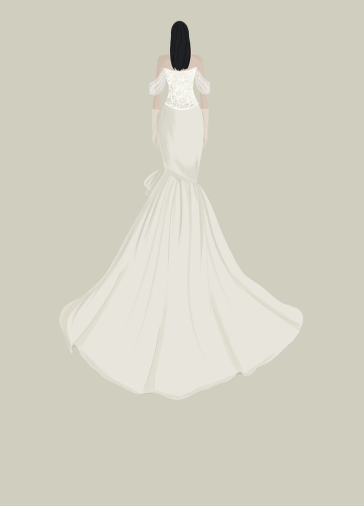
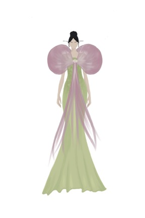
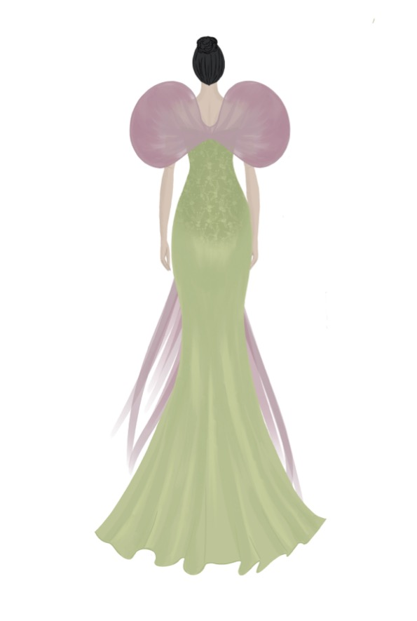
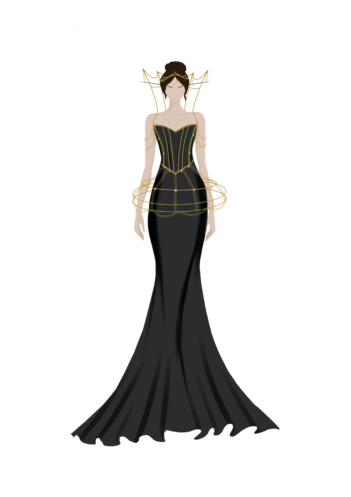
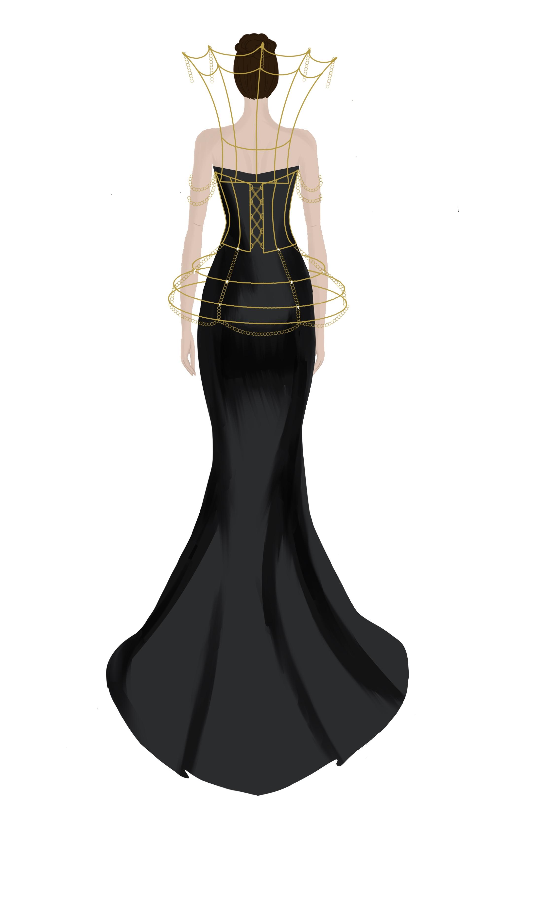
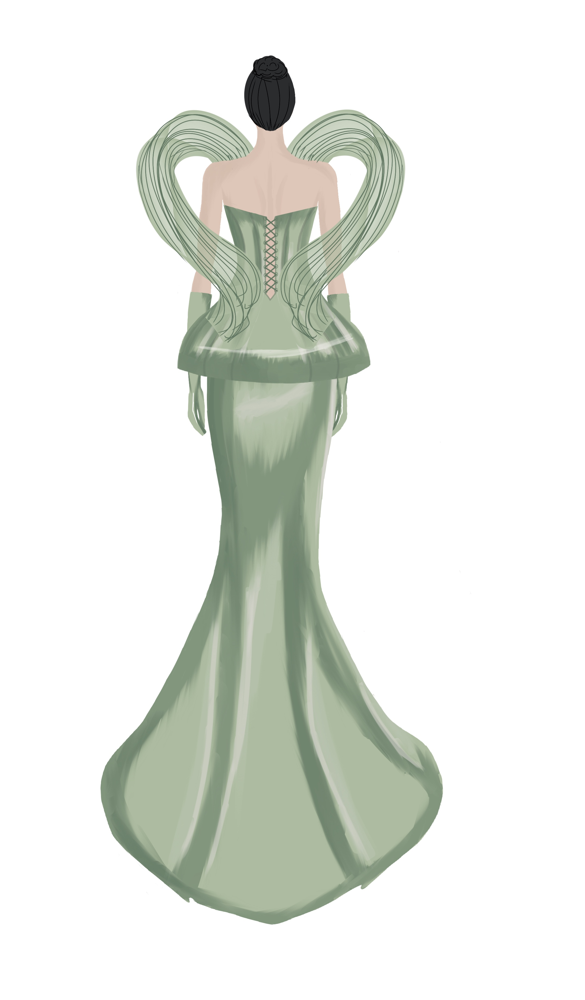
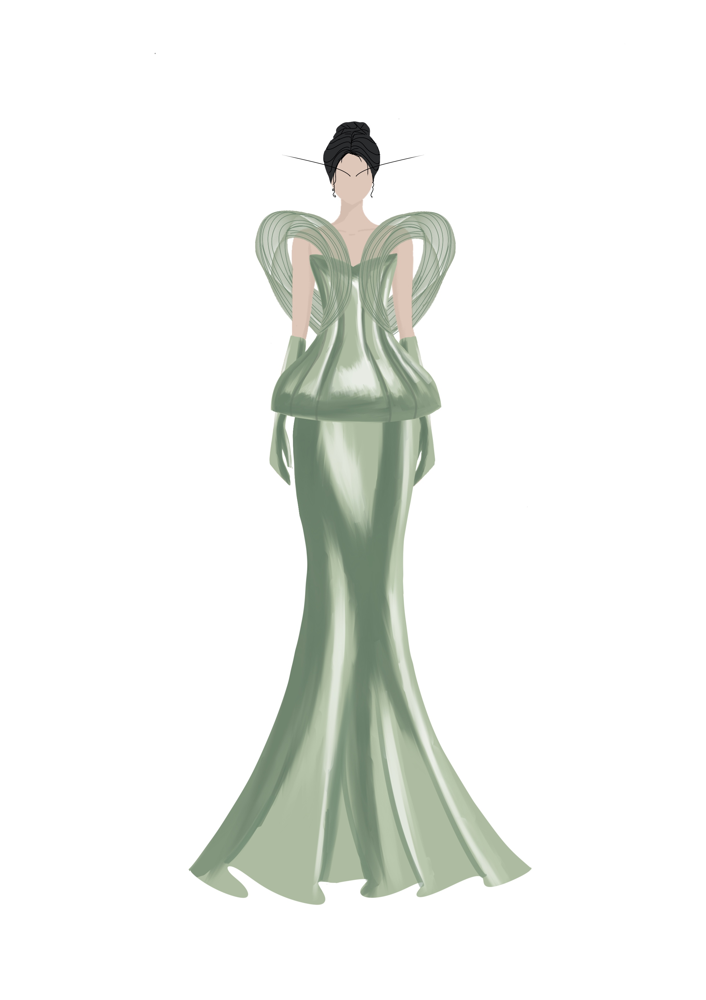